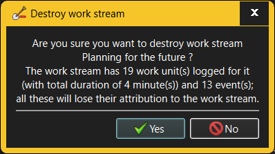

The Destroy Work Stream dialog requests confirmation when an attempt is made to destroy an existing Work Stream.

When destroying a Work Stream, any Activities and Tasks associated with the destroyed Work Stream will lose that association with that Work Stream. As a consequence, any Work items and comments logged for these Activities and Tasks will lose their attribution to a specific Work Stream. The Destroy Work Stream dialog will therefore show just how much an impact the Work Stream's destruction will have on the recorded work history.
Only someone with Administrator or Manage Workloads capabilities is allowed to destroy Work Streams. However, anyone who can log into a given workspace can see all Work Streams defined there.
See also: -